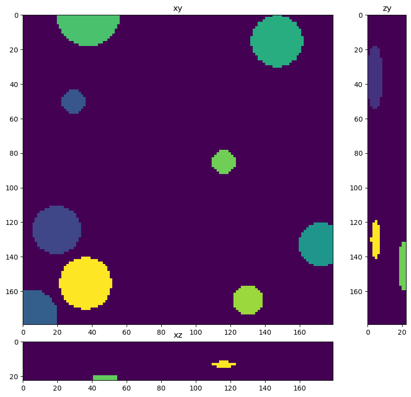

Train a stardist neural network for segmentation#
from skimage.io import imread, imsave
from tnia.plotting.projections import show_xyz_slice, show_xyz_max, show_xy_zy_max
from random import randint
import numpy as np
import os
from skimage.measure import label
from tnia.deeplearning.dl_helper import collect_training_data
from stardist import calculate_extents
Get the list of visible devices and confirm that GPU is available#
… or else training will take a long time
import tensorflow as tf
visible_devices = tf.config.list_physical_devices()
print(visible_devices)
[PhysicalDevice(name='/physical_device:CPU:0', device_type='CPU'), PhysicalDevice(name='/physical_device:GPU:0', device_type='GPU')]
Define model path#
This is the path where the model will be saved, change to be local to your machine
parent_dl_path = r'../../models'
model_path = os.path.join(parent_dl_path, r'models')
print(model_path)
patches_path = os.path.join(parent_dl_path, r'patches')
print(patches_path)
../../models\models
../../models\patches
Load the corrupted images and ground truth images#
data_path = r'../../data/deep learning training/'
dl_path = r'../../models'
data_path1 = os.path.join(data_path, 'spheres_small_noise_high_na_high', 'train')
paths = [data_path1]
X = []
Y = []
for path in paths:
X_, Y_ = collect_training_data(path, sub_sample=1, downsample=False, normalize_truth=False, training_multiple=16)
print(path)
print(len(X_))
print()
X.extend(X_)
Y.extend(Y_)
print(len(X))
print(len(Y))
fig = show_xy_zy_max(X[0])
fig = show_xy_zy_max(Y[0])
../../data/deep learning training/spheres_small_noise_high_na_high\train
25
25
25


Shuffle the datasets#
from tnia.deeplearning.dl_helper import shuffle
X, Y = shuffle(X, Y)
X = np.array(X)
Y = np.array(Y).astype(np.uint16)
print(X.max())
print(Y.max())
2.159091
399
Import Stardist#
from tnia.deeplearning.stardist_helper import get_stardist_configuration
from stardist.models import Config3D, StarDist3D
extents = calculate_extents(Y.squeeze().astype('uint16'))
anisotropy = tuple(np.max(extents) / extents)
print('extents', extents)
print('anisotropy', anisotropy)
extents [ 4.5 18. 18. ]
anisotropy (4.0, 1.0, 1.0)
Y.dtype
dtype('uint16')
from stardist import Rays_GoldenSpiral
n_channel_in =1
axes = 'ZYX'
n_rays = 96
# Use rays on a Fibonacci lattice adjusted for measured anisotropy of the training data
rays = Rays_GoldenSpiral(n_rays, anisotropy=anisotropy)
# create a csbdeep config
# we mostly use the default settings except in this case unet_n_depth=4, so we downsampling 4 times and can use low level features
# consider changing the number of filters (unet_n_first) to save memory
config = Config3D (rays=rays, axes=axes,n_channel_in=1, train_patch_size = (16,128,128), anisotropy=anisotropy, grid=(1,4,4), unet_n_depth=3)
#config = Config(axes, n_channel_in, n_channel_out, train_steps_per_epoch=20, train_epochs=50, unet_n_depth=4)
#print(config)
new_model = True
model_name = 'stardist_model1'
if new_model:
#model = StarDist3D(config, name='stardist_model_48ray_combined', basedir=model_path)
print('initializing new model')
model = StarDist3D(config, name=model_name, basedir=dl_path)
else:
model = StarDist3D(None, name=model_name, basedir=dl_path)
vars(config)
initializing new model
base_model.py (149): output path for model already exists, files may be overwritten: C:\Users\bnort\work\ImageJ2022\tnia\deconvolution-gpu-dl-course\models\stardist_model1
Using default values: prob_thresh=0.5, nms_thresh=0.4.
{'n_dim': 3,
'axes': 'ZYXC',
'n_channel_in': 1,
'n_channel_out': 97,
'train_checkpoint': 'weights_best.h5',
'train_checkpoint_last': 'weights_last.h5',
'train_checkpoint_epoch': 'weights_now.h5',
'n_rays': 96,
'grid': (1, 4, 4),
'anisotropy': (4.0, 1.0, 1.0),
'backbone': 'unet',
'rays_json': {'name': 'Rays_GoldenSpiral',
'kwargs': {'n': 96, 'anisotropy': (4.0, 1.0, 1.0)}},
'n_classes': None,
'unet_n_depth': 3,
'unet_kernel_size': (3, 3, 3),
'unet_n_filter_base': 32,
'unet_n_conv_per_depth': 2,
'unet_pool': (2, 2, 2),
'unet_activation': 'relu',
'unet_last_activation': 'relu',
'unet_batch_norm': False,
'unet_dropout': 0.0,
'unet_prefix': '',
'net_conv_after_unet': 128,
'net_input_shape': (None, None, None, 1),
'net_mask_shape': (None, None, None, 1),
'train_patch_size': (16, 128, 128),
'train_background_reg': 0.0001,
'train_foreground_only': 0.9,
'train_sample_cache': True,
'train_dist_loss': 'mae',
'train_loss_weights': (1, 0.2),
'train_class_weights': (1, 1),
'train_epochs': 400,
'train_steps_per_epoch': 100,
'train_learning_rate': 0.0003,
'train_batch_size': 1,
'train_n_val_patches': None,
'train_tensorboard': True,
'train_reduce_lr': {'factor': 0.5, 'patience': 40, 'min_delta': 0},
'use_gpu': False}
config.anisotropy, config.grid
median_size = calculate_extents(Y[1:2], np.median)
fov = np.array(model._axes_tile_overlap('ZYX'))
print(f"median object size: {median_size}")
print(f"network field of view : {fov}")
if any(median_size > fov):
print("WARNING: median object size larger than field of view of the neural network.")
median object size: [ 4.5 19. 19.5]
network field of view : [ 32 128 128]
X_train=X[3:]
Y_train=Y[3:]
X_val=X[:3]
Y_val=Y[:3]
model.train(X_train, Y_train, validation_data=(X_val,Y_val),epochs=50, steps_per_epoch=100)
Epoch 1/50
WARNING:tensorflow:AutoGraph could not transform <function _gcd_import at 0x000002CA200013A0> and will run it as-is.
Cause: Unable to locate the source code of <function _gcd_import at 0x000002CA200013A0>. Note that functions defined in certain environments, like the interactive Python shell, do not expose their source code. If that is the case, you should define them in a .py source file. If you are certain the code is graph-compatible, wrap the call using @tf.autograph.experimental.do_not_convert. Original error: could not get source code
To silence this warning, decorate the function with @tf.autograph.experimental.do_not_convert
WARNING: AutoGraph could not transform <function _gcd_import at 0x000002CA200013A0> and will run it as-is.
Cause: Unable to locate the source code of <function _gcd_import at 0x000002CA200013A0>. Note that functions defined in certain environments, like the interactive Python shell, do not expose their source code. If that is the case, you should define them in a .py source file. If you are certain the code is graph-compatible, wrap the call using @tf.autograph.experimental.do_not_convert. Original error: could not get source code
To silence this warning, decorate the function with @tf.autograph.experimental.do_not_convert
3/3 [==============================] - 0s 14ms/step- loss: 1.3270 - prob_loss: 0.2139 - dist_loss: 5.5655 - prob_kld: 0.1732 - dist_relevant_mae: 5.5653 - dist_relevant_mse: 52.1026 - dist_dist_iou_metric: 0.15
100/100 [==============================] - 11s 70ms/step - loss: 1.3270 - prob_loss: 0.2139 - dist_loss: 5.5655 - prob_kld: 0.1732 - dist_relevant_mae: 5.5653 - dist_relevant_mse: 52.1026 - dist_dist_iou_metric: 0.1520 - val_loss: 0.9803 - val_prob_loss: 0.1859 - val_dist_loss: 3.9717 - val_prob_kld: 0.1376 - val_dist_relevant_mae: 3.9711 - val_dist_relevant_mse: 28.0732 - val_dist_dist_iou_metric: 0.3577 - lr: 3.0000e-04
Epoch 2/50
3/3 [==============================] - 0s 13ms/step- loss: 0.8350 - prob_loss: 0.1372 - dist_loss: 3.4890 - prob_kld: 0.0960 - dist_relevant_mae: 3.4884 - dist_relevant_mse: 21.8643 - dist_dist_iou_metric: 0.38
100/100 [==============================] - 6s 56ms/step - loss: 0.8350 - prob_loss: 0.1372 - dist_loss: 3.4890 - prob_kld: 0.0960 - dist_relevant_mae: 3.4884 - dist_relevant_mse: 21.8643 - dist_dist_iou_metric: 0.3818 - val_loss: 0.7996 - val_prob_loss: 0.1546 - val_dist_loss: 3.2250 - val_prob_kld: 0.1063 - val_dist_relevant_mae: 3.2244 - val_dist_relevant_mse: 18.2369 - val_dist_dist_iou_metric: 0.4291 - lr: 3.0000e-04
Epoch 3/50
3/3 [==============================] - 0s 13ms/step- loss: 0.7709 - prob_loss: 0.1322 - dist_loss: 3.1936 - prob_kld: 0.0924 - dist_relevant_mae: 3.1930 - dist_relevant_mse: 18.1167 - dist_dist_iou_metric: 0.41
100/100 [==============================] - 6s 57ms/step - loss: 0.7714 - prob_loss: 0.1326 - dist_loss: 3.1944 - prob_kld: 0.0927 - dist_relevant_mae: 3.1937 - dist_relevant_mse: 18.1194 - dist_dist_iou_metric: 0.4155 - val_loss: 0.7821 - val_prob_loss: 0.1592 - val_dist_loss: 3.1143 - val_prob_kld: 0.1109 - val_dist_relevant_mae: 3.1136 - val_dist_relevant_mse: 17.2422 - val_dist_dist_iou_metric: 0.4345 - lr: 3.0000e-04
Epoch 4/50
3/3 [==============================] - 0s 14ms/step- loss: 0.7470 - prob_loss: 0.1327 - dist_loss: 3.0717 - prob_kld: 0.0924 - dist_relevant_mae: 3.0711 - dist_relevant_mse: 16.8825 - dist_dist_iou_metric: 0.43
100/100 [==============================] - 6s 56ms/step - loss: 0.7470 - prob_loss: 0.1327 - dist_loss: 3.0717 - prob_kld: 0.0924 - dist_relevant_mae: 3.0711 - dist_relevant_mse: 16.8825 - dist_dist_iou_metric: 0.4371 - val_loss: 0.7515 - val_prob_loss: 0.1497 - val_dist_loss: 3.0091 - val_prob_kld: 0.1014 - val_dist_relevant_mae: 3.0086 - val_dist_relevant_mse: 16.8290 - val_dist_dist_iou_metric: 0.4194 - lr: 3.0000e-04
Epoch 5/50
3/3 [==============================] - 0s 14ms/step- loss: 0.6420 - prob_loss: 0.1091 - dist_loss: 2.6643 - prob_kld: 0.0692 - dist_relevant_mae: 2.6637 - dist_relevant_mse: 12.7788 - dist_dist_iou_metric: 0.49
100/100 [==============================] - 6s 56ms/step - loss: 0.6420 - prob_loss: 0.1091 - dist_loss: 2.6643 - prob_kld: 0.0692 - dist_relevant_mae: 2.6637 - dist_relevant_mse: 12.7788 - dist_dist_iou_metric: 0.4992 - val_loss: 0.5477 - val_prob_loss: 0.0955 - val_dist_loss: 2.2609 - val_prob_kld: 0.0473 - val_dist_relevant_mae: 2.2604 - val_dist_relevant_mse: 9.5608 - val_dist_dist_iou_metric: 0.5720 - lr: 3.0000e-04
Epoch 6/50
3/3 [==============================] - 0s 16ms/step- loss: 0.5099 - prob_loss: 0.0738 - dist_loss: 2.1804 - prob_kld: 0.0332 - dist_relevant_mae: 2.1798 - dist_relevant_mse: 8.9809 - dist_dist_iou_metric: 0.57
100/100 [==============================] - 6s 56ms/step - loss: 0.5099 - prob_loss: 0.0738 - dist_loss: 2.1804 - prob_kld: 0.0332 - dist_relevant_mae: 2.1798 - dist_relevant_mse: 8.9809 - dist_dist_iou_metric: 0.5737 - val_loss: 0.4733 - val_prob_loss: 0.0709 - val_dist_loss: 2.0119 - val_prob_kld: 0.0226 - val_dist_relevant_mae: 2.0113 - val_dist_relevant_mse: 7.5943 - val_dist_dist_iou_metric: 0.6262 - lr: 3.0000e-04
Epoch 7/50
3/3 [==============================] - 0s 13ms/step- loss: 0.4258 - prob_loss: 0.0604 - dist_loss: 1.8267 - prob_kld: 0.0203 - dist_relevant_mae: 1.8261 - dist_relevant_mse: 6.3346 - dist_dist_iou_metric: 0.63
100/100 [==============================] - 6s 57ms/step - loss: 0.4258 - prob_loss: 0.0604 - dist_loss: 1.8267 - prob_kld: 0.0203 - dist_relevant_mae: 1.8261 - dist_relevant_mse: 6.3346 - dist_dist_iou_metric: 0.6321 - val_loss: 0.4062 - val_prob_loss: 0.0655 - val_dist_loss: 1.7031 - val_prob_kld: 0.0173 - val_dist_relevant_mae: 1.7025 - val_dist_relevant_mse: 6.0409 - val_dist_dist_iou_metric: 0.6473 - lr: 3.0000e-04
Epoch 8/50
3/3 [==============================] - 0s 13ms/step- loss: 0.3672 - prob_loss: 0.0561 - dist_loss: 1.5556 - prob_kld: 0.0157 - dist_relevant_mae: 1.5551 - dist_relevant_mse: 4.6732 - dist_dist_iou_metric: 0.67
100/100 [==============================] - 6s 56ms/step - loss: 0.3672 - prob_loss: 0.0561 - dist_loss: 1.5556 - prob_kld: 0.0157 - dist_relevant_mae: 1.5551 - dist_relevant_mse: 4.6732 - dist_dist_iou_metric: 0.6765 - val_loss: 0.3924 - val_prob_loss: 0.0634 - val_dist_loss: 1.6449 - val_prob_kld: 0.0151 - val_dist_relevant_mae: 1.6444 - val_dist_relevant_mse: 5.1874 - val_dist_dist_iou_metric: 0.6864 - lr: 3.0000e-04
Epoch 9/50
3/3 [==============================] - 0s 12ms/step- loss: 0.3387 - prob_loss: 0.0523 - dist_loss: 1.4320 - prob_kld: 0.0123 - dist_relevant_mae: 1.4315 - dist_relevant_mse: 4.0111 - dist_dist_iou_metric: 0.70
100/100 [==============================] - 6s 55ms/step - loss: 0.3387 - prob_loss: 0.0523 - dist_loss: 1.4320 - prob_kld: 0.0123 - dist_relevant_mae: 1.4315 - dist_relevant_mse: 4.0111 - dist_dist_iou_metric: 0.7003 - val_loss: 0.3344 - val_prob_loss: 0.0599 - val_dist_loss: 1.3725 - val_prob_kld: 0.0117 - val_dist_relevant_mae: 1.3720 - val_dist_relevant_mse: 3.8657 - val_dist_dist_iou_metric: 0.7119 - lr: 3.0000e-04
Epoch 10/50
3/3 [==============================] - 0s 15ms/step- loss: 0.3007 - prob_loss: 0.0499 - dist_loss: 1.2538 - prob_kld: 0.0107 - dist_relevant_mae: 1.2533 - dist_relevant_mse: 3.1277 - dist_dist_iou_metric: 0.73
100/100 [==============================] - 6s 56ms/step - loss: 0.3009 - prob_loss: 0.0500 - dist_loss: 1.2541 - prob_kld: 0.0107 - dist_relevant_mae: 1.2537 - dist_relevant_mse: 3.1286 - dist_dist_iou_metric: 0.7328 - val_loss: 0.3175 - val_prob_loss: 0.0597 - val_dist_loss: 1.2894 - val_prob_kld: 0.0114 - val_dist_relevant_mae: 1.2889 - val_dist_relevant_mse: 3.6239 - val_dist_dist_iou_metric: 0.7338 - lr: 3.0000e-04
Epoch 11/50
3/3 [==============================] - 0s 13ms/step- loss: 0.2852 - prob_loss: 0.0504 - dist_loss: 1.1740 - prob_kld: 0.0093 - dist_relevant_mae: 1.1735 - dist_relevant_mse: 2.7481 - dist_dist_iou_metric: 0.74
100/100 [==============================] - 6s 57ms/step - loss: 0.2852 - prob_loss: 0.0504 - dist_loss: 1.1740 - prob_kld: 0.0093 - dist_relevant_mae: 1.1735 - dist_relevant_mse: 2.7481 - dist_dist_iou_metric: 0.7483 - val_loss: 0.3007 - val_prob_loss: 0.0576 - val_dist_loss: 1.2153 - val_prob_kld: 0.0093 - val_dist_relevant_mae: 1.2149 - val_dist_relevant_mse: 3.0857 - val_dist_dist_iou_metric: 0.7524 - lr: 3.0000e-04
Epoch 12/50
3/3 [==============================] - 0s 15ms/step- loss: 0.2666 - prob_loss: 0.0487 - dist_loss: 1.0897 - prob_kld: 0.0088 - dist_relevant_mae: 1.0893 - dist_relevant_mse: 2.3725 - dist_dist_iou_metric: 0.76
100/100 [==============================] - 6s 57ms/step - loss: 0.2666 - prob_loss: 0.0487 - dist_loss: 1.0897 - prob_kld: 0.0088 - dist_relevant_mae: 1.0893 - dist_relevant_mse: 2.3725 - dist_dist_iou_metric: 0.7646 - val_loss: 0.2830 - val_prob_loss: 0.0567 - val_dist_loss: 1.1312 - val_prob_kld: 0.0084 - val_dist_relevant_mae: 1.1309 - val_dist_relevant_mse: 2.7547 - val_dist_dist_iou_metric: 0.7611 - lr: 3.0000e-04
Epoch 13/50
3/3 [==============================] - 0s 16ms/step- loss: 0.2596 - prob_loss: 0.0477 - dist_loss: 1.0595 - prob_kld: 0.0077 - dist_relevant_mae: 1.0591 - dist_relevant_mse: 2.2508 - dist_dist_iou_metric: 0.77
100/100 [==============================] - 6s 55ms/step - loss: 0.2596 - prob_loss: 0.0477 - dist_loss: 1.0595 - prob_kld: 0.0077 - dist_relevant_mae: 1.0591 - dist_relevant_mse: 2.2508 - dist_dist_iou_metric: 0.7707 - val_loss: 0.2913 - val_prob_loss: 0.0572 - val_dist_loss: 1.1707 - val_prob_kld: 0.0089 - val_dist_relevant_mae: 1.1703 - val_dist_relevant_mse: 2.9046 - val_dist_dist_iou_metric: 0.7646 - lr: 3.0000e-04
Epoch 14/50
3/3 [==============================] - 0s 18ms/step- loss: 0.2460 - prob_loss: 0.0474 - dist_loss: 0.9928 - prob_kld: 0.0072 - dist_relevant_mae: 0.9925 - dist_relevant_mse: 2.0164 - dist_dist_iou_metric: 0.78
100/100 [==============================] - 6s 58ms/step - loss: 0.2460 - prob_loss: 0.0475 - dist_loss: 0.9926 - prob_kld: 0.0072 - dist_relevant_mae: 0.9922 - dist_relevant_mse: 2.0150 - dist_dist_iou_metric: 0.7843 - val_loss: 0.2800 - val_prob_loss: 0.0562 - val_dist_loss: 1.1193 - val_prob_kld: 0.0079 - val_dist_relevant_mae: 1.1190 - val_dist_relevant_mse: 2.7974 - val_dist_dist_iou_metric: 0.7593 - lr: 3.0000e-04
Epoch 15/50
3/3 [==============================] - 0s 14ms/step- loss: 0.2498 - prob_loss: 0.0473 - dist_loss: 1.0123 - prob_kld: 0.0067 - dist_relevant_mae: 1.0120 - dist_relevant_mse: 2.0418 - dist_dist_iou_metric: 0.78
100/100 [==============================] - 6s 55ms/step - loss: 0.2498 - prob_loss: 0.0473 - dist_loss: 1.0123 - prob_kld: 0.0067 - dist_relevant_mae: 1.0120 - dist_relevant_mse: 2.0418 - dist_dist_iou_metric: 0.7801 - val_loss: 0.2612 - val_prob_loss: 0.0566 - val_dist_loss: 1.0226 - val_prob_kld: 0.0083 - val_dist_relevant_mae: 1.0223 - val_dist_relevant_mse: 2.3322 - val_dist_dist_iou_metric: 0.7856 - lr: 3.0000e-04
Epoch 16/50
3/3 [==============================] - 0s 13ms/step- loss: 0.2301 - prob_loss: 0.0465 - dist_loss: 0.9180 - prob_kld: 0.0062 - dist_relevant_mae: 0.9177 - dist_relevant_mse: 1.7309 - dist_dist_iou_metric: 0.79
100/100 [==============================] - 6s 55ms/step - loss: 0.2301 - prob_loss: 0.0465 - dist_loss: 0.9180 - prob_kld: 0.0062 - dist_relevant_mae: 0.9177 - dist_relevant_mse: 1.7309 - dist_dist_iou_metric: 0.7975 - val_loss: 0.2684 - val_prob_loss: 0.0565 - val_dist_loss: 1.0593 - val_prob_kld: 0.0083 - val_dist_relevant_mae: 1.0589 - val_dist_relevant_mse: 2.6229 - val_dist_dist_iou_metric: 0.7811 - lr: 3.0000e-04
Epoch 17/50
3/3 [==============================] - 0s 13ms/step- loss: 0.2298 - prob_loss: 0.0461 - dist_loss: 0.9188 - prob_kld: 0.0056 - dist_relevant_mae: 0.9185 - dist_relevant_mse: 1.6960 - dist_dist_iou_metric: 0.79
100/100 [==============================] - 6s 55ms/step - loss: 0.2297 - prob_loss: 0.0461 - dist_loss: 0.9182 - prob_kld: 0.0056 - dist_relevant_mae: 0.9179 - dist_relevant_mse: 1.6939 - dist_dist_iou_metric: 0.7992 - val_loss: 0.2699 - val_prob_loss: 0.0562 - val_dist_loss: 1.0683 - val_prob_kld: 0.0079 - val_dist_relevant_mae: 1.0680 - val_dist_relevant_mse: 2.5936 - val_dist_dist_iou_metric: 0.7672 - lr: 3.0000e-04
Epoch 18/50
3/3 [==============================] - 0s 14ms/step- loss: 0.2207 - prob_loss: 0.0446 - dist_loss: 0.8808 - prob_kld: 0.0056 - dist_relevant_mae: 0.8805 - dist_relevant_mse: 1.5929 - dist_dist_iou_metric: 0.80
100/100 [==============================] - 6s 56ms/step - loss: 0.2207 - prob_loss: 0.0446 - dist_loss: 0.8808 - prob_kld: 0.0056 - dist_relevant_mae: 0.8805 - dist_relevant_mse: 1.5929 - dist_dist_iou_metric: 0.8045 - val_loss: 0.2497 - val_prob_loss: 0.0550 - val_dist_loss: 0.9736 - val_prob_kld: 0.0067 - val_dist_relevant_mae: 0.9733 - val_dist_relevant_mse: 2.1236 - val_dist_dist_iou_metric: 0.7964 - lr: 3.0000e-04
Epoch 19/50
3/3 [==============================] - 0s 13ms/step- loss: 0.2167 - prob_loss: 0.0454 - dist_loss: 0.8566 - prob_kld: 0.0053 - dist_relevant_mae: 0.8563 - dist_relevant_mse: 1.5015 - dist_dist_iou_metric: 0.81
100/100 [==============================] - 6s 57ms/step - loss: 0.2167 - prob_loss: 0.0454 - dist_loss: 0.8566 - prob_kld: 0.0053 - dist_relevant_mae: 0.8563 - dist_relevant_mse: 1.5015 - dist_dist_iou_metric: 0.8115 - val_loss: 0.2492 - val_prob_loss: 0.0553 - val_dist_loss: 0.9696 - val_prob_kld: 0.0070 - val_dist_relevant_mae: 0.9693 - val_dist_relevant_mse: 2.2486 - val_dist_dist_iou_metric: 0.7975 - lr: 3.0000e-04
Epoch 20/50
3/3 [==============================] - 0s 13ms/step- loss: 0.2208 - prob_loss: 0.0461 - dist_loss: 0.8737 - prob_kld: 0.0052 - dist_relevant_mae: 0.8734 - dist_relevant_mse: 1.5388 - dist_dist_iou_metric: 0.80
100/100 [==============================] - 6s 56ms/step - loss: 0.2208 - prob_loss: 0.0461 - dist_loss: 0.8737 - prob_kld: 0.0052 - dist_relevant_mae: 0.8734 - dist_relevant_mse: 1.5388 - dist_dist_iou_metric: 0.8080 - val_loss: 0.2652 - val_prob_loss: 0.0546 - val_dist_loss: 1.0529 - val_prob_kld: 0.0063 - val_dist_relevant_mae: 1.0526 - val_dist_relevant_mse: 2.3717 - val_dist_dist_iou_metric: 0.7854 - lr: 3.0000e-04
Epoch 21/50
3/3 [==============================] - 0s 15ms/step- loss: 0.2074 - prob_loss: 0.0438 - dist_loss: 0.8180 - prob_kld: 0.0046 - dist_relevant_mae: 0.8177 - dist_relevant_mse: 1.3642 - dist_dist_iou_metric: 0.81
100/100 [==============================] - 6s 57ms/step - loss: 0.2076 - prob_loss: 0.0439 - dist_loss: 0.8185 - prob_kld: 0.0046 - dist_relevant_mae: 0.8182 - dist_relevant_mse: 1.3656 - dist_dist_iou_metric: 0.8198 - val_loss: 0.2396 - val_prob_loss: 0.0547 - val_dist_loss: 0.9246 - val_prob_kld: 0.0064 - val_dist_relevant_mae: 0.9243 - val_dist_relevant_mse: 2.1076 - val_dist_dist_iou_metric: 0.8031 - lr: 3.0000e-04
Epoch 22/50
3/3 [==============================] - 0s 11ms/step- loss: 0.2030 - prob_loss: 0.0450 - dist_loss: 0.7904 - prob_kld: 0.0044 - dist_relevant_mae: 0.7901 - dist_relevant_mse: 1.2892 - dist_dist_iou_metric: 0.82
100/100 [==============================] - 6s 55ms/step - loss: 0.2033 - prob_loss: 0.0450 - dist_loss: 0.7914 - prob_kld: 0.0045 - dist_relevant_mae: 0.7911 - dist_relevant_mse: 1.2931 - dist_dist_iou_metric: 0.8273 - val_loss: 0.2436 - val_prob_loss: 0.0547 - val_dist_loss: 0.9443 - val_prob_kld: 0.0065 - val_dist_relevant_mae: 0.9440 - val_dist_relevant_mse: 2.1245 - val_dist_dist_iou_metric: 0.8045 - lr: 3.0000e-04
Epoch 23/50
3/3 [==============================] - 0s 15ms/step- loss: 0.2066 - prob_loss: 0.0443 - dist_loss: 0.8117 - prob_kld: 0.0045 - dist_relevant_mae: 0.8115 - dist_relevant_mse: 1.3456 - dist_dist_iou_metric: 0.82
100/100 [==============================] - 6s 57ms/step - loss: 0.2066 - prob_loss: 0.0443 - dist_loss: 0.8117 - prob_kld: 0.0045 - dist_relevant_mae: 0.8115 - dist_relevant_mse: 1.3456 - dist_dist_iou_metric: 0.8200 - val_loss: 0.2380 - val_prob_loss: 0.0544 - val_dist_loss: 0.9181 - val_prob_kld: 0.0061 - val_dist_relevant_mae: 0.9178 - val_dist_relevant_mse: 2.0196 - val_dist_dist_iou_metric: 0.8029 - lr: 3.0000e-04
Epoch 24/50
3/3 [==============================] - 0s 13ms/step- loss: 0.1994 - prob_loss: 0.0436 - dist_loss: 0.7790 - prob_kld: 0.0043 - dist_relevant_mae: 0.7787 - dist_relevant_mse: 1.2438 - dist_dist_iou_metric: 0.82
100/100 [==============================] - 6s 56ms/step - loss: 0.1994 - prob_loss: 0.0436 - dist_loss: 0.7790 - prob_kld: 0.0043 - dist_relevant_mae: 0.7787 - dist_relevant_mse: 1.2438 - dist_dist_iou_metric: 0.8262 - val_loss: 0.2365 - val_prob_loss: 0.0539 - val_dist_loss: 0.9135 - val_prob_kld: 0.0056 - val_dist_relevant_mae: 0.9132 - val_dist_relevant_mse: 2.0614 - val_dist_dist_iou_metric: 0.8053 - lr: 3.0000e-04
Epoch 25/50
3/3 [==============================] - 0s 13ms/step- loss: 0.1978 - prob_loss: 0.0438 - dist_loss: 0.7702 - prob_kld: 0.0041 - dist_relevant_mae: 0.7699 - dist_relevant_mse: 1.2125 - dist_dist_iou_metric: 0.82
100/100 [==============================] - 6s 55ms/step - loss: 0.1977 - prob_loss: 0.0437 - dist_loss: 0.7699 - prob_kld: 0.0041 - dist_relevant_mae: 0.7697 - dist_relevant_mse: 1.2119 - dist_dist_iou_metric: 0.8294 - val_loss: 0.2372 - val_prob_loss: 0.0548 - val_dist_loss: 0.9121 - val_prob_kld: 0.0065 - val_dist_relevant_mae: 0.9118 - val_dist_relevant_mse: 1.9579 - val_dist_dist_iou_metric: 0.8093 - lr: 3.0000e-04
Epoch 26/50
3/3 [==============================] - 0s 12ms/step- loss: 0.1960 - prob_loss: 0.0444 - dist_loss: 0.7581 - prob_kld: 0.0041 - dist_relevant_mae: 0.7579 - dist_relevant_mse: 1.1775 - dist_dist_iou_metric: 0.83
100/100 [==============================] - 5s 55ms/step - loss: 0.1958 - prob_loss: 0.0442 - dist_loss: 0.7580 - prob_kld: 0.0041 - dist_relevant_mae: 0.7577 - dist_relevant_mse: 1.1771 - dist_dist_iou_metric: 0.8314 - val_loss: 0.2516 - val_prob_loss: 0.0547 - val_dist_loss: 0.9846 - val_prob_kld: 0.0064 - val_dist_relevant_mae: 0.9842 - val_dist_relevant_mse: 2.1027 - val_dist_dist_iou_metric: 0.7989 - lr: 3.0000e-04
Epoch 27/50
3/3 [==============================] - 0s 16ms/step- loss: 0.1985 - prob_loss: 0.0451 - dist_loss: 0.7669 - prob_kld: 0.0042 - dist_relevant_mae: 0.7666 - dist_relevant_mse: 1.2108 - dist_dist_iou_metric: 0.83
100/100 [==============================] - 6s 57ms/step - loss: 0.1985 - prob_loss: 0.0451 - dist_loss: 0.7668 - prob_kld: 0.0042 - dist_relevant_mae: 0.7665 - dist_relevant_mse: 1.2100 - dist_dist_iou_metric: 0.8308 - val_loss: 0.2301 - val_prob_loss: 0.0538 - val_dist_loss: 0.8815 - val_prob_kld: 0.0056 - val_dist_relevant_mae: 0.8812 - val_dist_relevant_mse: 1.9017 - val_dist_dist_iou_metric: 0.8124 - lr: 3.0000e-04
Epoch 28/50
3/3 [==============================] - 0s 14ms/step- loss: 0.1930 - prob_loss: 0.0437 - dist_loss: 0.7463 - prob_kld: 0.0037 - dist_relevant_mae: 0.7461 - dist_relevant_mse: 1.1401 - dist_dist_iou_metric: 0.83
100/100 [==============================] - 6s 56ms/step - loss: 0.1930 - prob_loss: 0.0437 - dist_loss: 0.7463 - prob_kld: 0.0037 - dist_relevant_mae: 0.7461 - dist_relevant_mse: 1.1401 - dist_dist_iou_metric: 0.8347 - val_loss: 0.2355 - val_prob_loss: 0.0545 - val_dist_loss: 0.9047 - val_prob_kld: 0.0062 - val_dist_relevant_mae: 0.9045 - val_dist_relevant_mse: 2.0729 - val_dist_dist_iou_metric: 0.8064 - lr: 3.0000e-04
Epoch 29/50
3/3 [==============================] - 0s 13ms/step- loss: 0.1975 - prob_loss: 0.0440 - dist_loss: 0.7679 - prob_kld: 0.0038 - dist_relevant_mae: 0.7677 - dist_relevant_mse: 1.1921 - dist_dist_iou_metric: 0.83
100/100 [==============================] - 6s 56ms/step - loss: 0.1975 - prob_loss: 0.0440 - dist_loss: 0.7679 - prob_kld: 0.0038 - dist_relevant_mae: 0.7677 - dist_relevant_mse: 1.1921 - dist_dist_iou_metric: 0.8302 - val_loss: 0.2316 - val_prob_loss: 0.0538 - val_dist_loss: 0.8890 - val_prob_kld: 0.0056 - val_dist_relevant_mae: 0.8887 - val_dist_relevant_mse: 1.8020 - val_dist_dist_iou_metric: 0.8165 - lr: 3.0000e-04
Epoch 30/50
3/3 [==============================] - 0s 11ms/step- loss: 0.1966 - prob_loss: 0.0446 - dist_loss: 0.7598 - prob_kld: 0.0039 - dist_relevant_mae: 0.7595 - dist_relevant_mse: 1.1722 - dist_dist_iou_metric: 0.83
100/100 [==============================] - 6s 58ms/step - loss: 0.1967 - prob_loss: 0.0448 - dist_loss: 0.7595 - prob_kld: 0.0039 - dist_relevant_mae: 0.7592 - dist_relevant_mse: 1.1710 - dist_dist_iou_metric: 0.8317 - val_loss: 0.2226 - val_prob_loss: 0.0533 - val_dist_loss: 0.8464 - val_prob_kld: 0.0050 - val_dist_relevant_mae: 0.8462 - val_dist_relevant_mse: 1.6842 - val_dist_dist_iou_metric: 0.8166 - lr: 3.0000e-04
Epoch 31/50
3/3 [==============================] - 0s 16ms/step- loss: 0.1875 - prob_loss: 0.0435 - dist_loss: 0.7203 - prob_kld: 0.0034 - dist_relevant_mae: 0.7200 - dist_relevant_mse: 1.0697 - dist_dist_iou_metric: 0.83
100/100 [==============================] - 6s 57ms/step - loss: 0.1875 - prob_loss: 0.0435 - dist_loss: 0.7203 - prob_kld: 0.0034 - dist_relevant_mae: 0.7200 - dist_relevant_mse: 1.0697 - dist_dist_iou_metric: 0.8390 - val_loss: 0.2245 - val_prob_loss: 0.0537 - val_dist_loss: 0.8538 - val_prob_kld: 0.0054 - val_dist_relevant_mae: 0.8536 - val_dist_relevant_mse: 1.7542 - val_dist_dist_iou_metric: 0.8167 - lr: 3.0000e-04
Epoch 32/50
3/3 [==============================] - 0s 16ms/step- loss: 0.1862 - prob_loss: 0.0440 - dist_loss: 0.7111 - prob_kld: 0.0034 - dist_relevant_mae: 0.7108 - dist_relevant_mse: 1.0454 - dist_dist_iou_metric: 0.84
100/100 [==============================] - 6s 56ms/step - loss: 0.1862 - prob_loss: 0.0440 - dist_loss: 0.7111 - prob_kld: 0.0034 - dist_relevant_mae: 0.7108 - dist_relevant_mse: 1.0454 - dist_dist_iou_metric: 0.8422 - val_loss: 0.2356 - val_prob_loss: 0.0543 - val_dist_loss: 0.9066 - val_prob_kld: 0.0060 - val_dist_relevant_mae: 0.9064 - val_dist_relevant_mse: 1.9698 - val_dist_dist_iou_metric: 0.8063 - lr: 3.0000e-04
Epoch 33/50
3/3 [==============================] - 0s 15ms/step- loss: 0.1870 - prob_loss: 0.0440 - dist_loss: 0.7150 - prob_kld: 0.0033 - dist_relevant_mae: 0.7148 - dist_relevant_mse: 1.0470 - dist_dist_iou_metric: 0.84
100/100 [==============================] - 6s 57ms/step - loss: 0.1872 - prob_loss: 0.0440 - dist_loss: 0.7155 - prob_kld: 0.0033 - dist_relevant_mae: 0.7153 - dist_relevant_mse: 1.0489 - dist_dist_iou_metric: 0.8416 - val_loss: 0.2487 - val_prob_loss: 0.0544 - val_dist_loss: 0.9713 - val_prob_kld: 0.0062 - val_dist_relevant_mae: 0.9710 - val_dist_relevant_mse: 2.0018 - val_dist_dist_iou_metric: 0.8016 - lr: 3.0000e-04
Epoch 34/50
3/3 [==============================] - 0s 11ms/step- loss: 0.1852 - prob_loss: 0.0426 - dist_loss: 0.7129 - prob_kld: 0.0032 - dist_relevant_mae: 0.7126 - dist_relevant_mse: 1.0340 - dist_dist_iou_metric: 0.84
100/100 [==============================] - 6s 55ms/step - loss: 0.1852 - prob_loss: 0.0426 - dist_loss: 0.7129 - prob_kld: 0.0032 - dist_relevant_mae: 0.7126 - dist_relevant_mse: 1.0340 - dist_dist_iou_metric: 0.8423 - val_loss: 0.2230 - val_prob_loss: 0.0539 - val_dist_loss: 0.8455 - val_prob_kld: 0.0056 - val_dist_relevant_mae: 0.8452 - val_dist_relevant_mse: 1.6361 - val_dist_dist_iou_metric: 0.8216 - lr: 3.0000e-04
Epoch 35/50
3/3 [==============================] - 0s 13ms/step- loss: 0.1830 - prob_loss: 0.0430 - dist_loss: 0.7001 - prob_kld: 0.0031 - dist_relevant_mae: 0.6998 - dist_relevant_mse: 1.0106 - dist_dist_iou_metric: 0.84
100/100 [==============================] - 6s 55ms/step - loss: 0.1830 - prob_loss: 0.0430 - dist_loss: 0.7001 - prob_kld: 0.0031 - dist_relevant_mae: 0.6998 - dist_relevant_mse: 1.0106 - dist_dist_iou_metric: 0.8429 - val_loss: 0.2249 - val_prob_loss: 0.0540 - val_dist_loss: 0.8545 - val_prob_kld: 0.0057 - val_dist_relevant_mae: 0.8542 - val_dist_relevant_mse: 1.7643 - val_dist_dist_iou_metric: 0.8158 - lr: 3.0000e-04
Epoch 36/50
3/3 [==============================] - 0s 14ms/step- loss: 0.1811 - prob_loss: 0.0440 - dist_loss: 0.6856 - prob_kld: 0.0030 - dist_relevant_mae: 0.6854 - dist_relevant_mse: 0.9775 - dist_dist_iou_metric: 0.84
100/100 [==============================] - 6s 56ms/step - loss: 0.1811 - prob_loss: 0.0440 - dist_loss: 0.6856 - prob_kld: 0.0030 - dist_relevant_mae: 0.6854 - dist_relevant_mse: 0.9775 - dist_dist_iou_metric: 0.8481 - val_loss: 0.2233 - val_prob_loss: 0.0535 - val_dist_loss: 0.8486 - val_prob_kld: 0.0053 - val_dist_relevant_mae: 0.8483 - val_dist_relevant_mse: 1.6642 - val_dist_dist_iou_metric: 0.8232 - lr: 3.0000e-04
Epoch 37/50
3/3 [==============================] - 0s 12ms/step- loss: 0.1782 - prob_loss: 0.0436 - dist_loss: 0.6732 - prob_kld: 0.0029 - dist_relevant_mae: 0.6730 - dist_relevant_mse: 0.9362 - dist_dist_iou_metric: 0.85
100/100 [==============================] - 6s 55ms/step - loss: 0.1782 - prob_loss: 0.0436 - dist_loss: 0.6732 - prob_kld: 0.0029 - dist_relevant_mae: 0.6730 - dist_relevant_mse: 0.9362 - dist_dist_iou_metric: 0.8505 - val_loss: 0.2268 - val_prob_loss: 0.0540 - val_dist_loss: 0.8637 - val_prob_kld: 0.0057 - val_dist_relevant_mae: 0.8635 - val_dist_relevant_mse: 1.8194 - val_dist_dist_iou_metric: 0.8192 - lr: 3.0000e-04
Epoch 38/50
3/3 [==============================] - 0s 13ms/step- loss: 0.1855 - prob_loss: 0.0437 - dist_loss: 0.7090 - prob_kld: 0.0032 - dist_relevant_mae: 0.7087 - dist_relevant_mse: 1.0187 - dist_dist_iou_metric: 0.84
100/100 [==============================] - 6s 57ms/step - loss: 0.1856 - prob_loss: 0.0438 - dist_loss: 0.7089 - prob_kld: 0.0032 - dist_relevant_mae: 0.7086 - dist_relevant_mse: 1.0185 - dist_dist_iou_metric: 0.8418 - val_loss: 0.2246 - val_prob_loss: 0.0534 - val_dist_loss: 0.8561 - val_prob_kld: 0.0051 - val_dist_relevant_mae: 0.8558 - val_dist_relevant_mse: 1.6534 - val_dist_dist_iou_metric: 0.8213 - lr: 3.0000e-04
Epoch 39/50
3/3 [==============================] - 0s 12ms/step- loss: 0.1798 - prob_loss: 0.0417 - dist_loss: 0.6905 - prob_kld: 0.0030 - dist_relevant_mae: 0.6903 - dist_relevant_mse: 0.9770 - dist_dist_iou_metric: 0.84
100/100 [==============================] - 5s 55ms/step - loss: 0.1797 - prob_loss: 0.0417 - dist_loss: 0.6901 - prob_kld: 0.0030 - dist_relevant_mae: 0.6899 - dist_relevant_mse: 0.9764 - dist_dist_iou_metric: 0.8455 - val_loss: 0.2303 - val_prob_loss: 0.0540 - val_dist_loss: 0.8811 - val_prob_kld: 0.0058 - val_dist_relevant_mae: 0.8808 - val_dist_relevant_mse: 1.7475 - val_dist_dist_iou_metric: 0.8164 - lr: 3.0000e-04
Epoch 40/50
3/3 [==============================] - 0s 11ms/step- loss: 0.1826 - prob_loss: 0.0420 - dist_loss: 0.7034 - prob_kld: 0.0030 - dist_relevant_mae: 0.7032 - dist_relevant_mse: 1.0108 - dist_dist_iou_metric: 0.84
100/100 [==============================] - 6s 56ms/step - loss: 0.1826 - prob_loss: 0.0420 - dist_loss: 0.7034 - prob_kld: 0.0030 - dist_relevant_mae: 0.7032 - dist_relevant_mse: 1.0108 - dist_dist_iou_metric: 0.8429 - val_loss: 0.2189 - val_prob_loss: 0.0537 - val_dist_loss: 0.8261 - val_prob_kld: 0.0054 - val_dist_relevant_mae: 0.8259 - val_dist_relevant_mse: 1.7012 - val_dist_dist_iou_metric: 0.8229 - lr: 3.0000e-04
Epoch 41/50
3/3 [==============================] - 0s 16ms/step- loss: 0.1752 - prob_loss: 0.0438 - dist_loss: 0.6570 - prob_kld: 0.0028 - dist_relevant_mae: 0.6568 - dist_relevant_mse: 0.9003 - dist_dist_iou_metric: 0.85
100/100 [==============================] - 6s 57ms/step - loss: 0.1752 - prob_loss: 0.0438 - dist_loss: 0.6570 - prob_kld: 0.0028 - dist_relevant_mae: 0.6568 - dist_relevant_mse: 0.9003 - dist_dist_iou_metric: 0.8530 - val_loss: 0.2166 - val_prob_loss: 0.0534 - val_dist_loss: 0.8159 - val_prob_kld: 0.0052 - val_dist_relevant_mae: 0.8157 - val_dist_relevant_mse: 1.6178 - val_dist_dist_iou_metric: 0.8284 - lr: 3.0000e-04
Epoch 42/50
3/3 [==============================] - 0s 14ms/step- loss: 0.1727 - prob_loss: 0.0429 - dist_loss: 0.6491 - prob_kld: 0.0027 - dist_relevant_mae: 0.6490 - dist_relevant_mse: 0.8753 - dist_dist_iou_metric: 0.85
100/100 [==============================] - 6s 56ms/step - loss: 0.1727 - prob_loss: 0.0429 - dist_loss: 0.6491 - prob_kld: 0.0027 - dist_relevant_mae: 0.6490 - dist_relevant_mse: 0.8753 - dist_dist_iou_metric: 0.8545 - val_loss: 0.2171 - val_prob_loss: 0.0535 - val_dist_loss: 0.8181 - val_prob_kld: 0.0052 - val_dist_relevant_mae: 0.8180 - val_dist_relevant_mse: 1.6264 - val_dist_dist_iou_metric: 0.8273 - lr: 3.0000e-04
Epoch 43/50
3/3 [==============================] - 0s 15ms/step- loss: 0.1822 - prob_loss: 0.0435 - dist_loss: 0.6932 - prob_kld: 0.0028 - dist_relevant_mae: 0.6930 - dist_relevant_mse: 0.9735 - dist_dist_iou_metric: 0.84
100/100 [==============================] - 6s 59ms/step - loss: 0.1822 - prob_loss: 0.0435 - dist_loss: 0.6932 - prob_kld: 0.0028 - dist_relevant_mae: 0.6930 - dist_relevant_mse: 0.9735 - dist_dist_iou_metric: 0.8449 - val_loss: 0.2239 - val_prob_loss: 0.0539 - val_dist_loss: 0.8504 - val_prob_kld: 0.0056 - val_dist_relevant_mae: 0.8502 - val_dist_relevant_mse: 1.7538 - val_dist_dist_iou_metric: 0.8146 - lr: 3.0000e-04
Epoch 44/50
3/3 [==============================] - 0s 15ms/step- loss: 0.1767 - prob_loss: 0.0430 - dist_loss: 0.6686 - prob_kld: 0.0027 - dist_relevant_mae: 0.6684 - dist_relevant_mse: 0.9198 - dist_dist_iou_metric: 0.85
100/100 [==============================] - 6s 58ms/step - loss: 0.1767 - prob_loss: 0.0430 - dist_loss: 0.6686 - prob_kld: 0.0027 - dist_relevant_mae: 0.6684 - dist_relevant_mse: 0.9198 - dist_dist_iou_metric: 0.8504 - val_loss: 0.2160 - val_prob_loss: 0.0534 - val_dist_loss: 0.8129 - val_prob_kld: 0.0051 - val_dist_relevant_mae: 0.8128 - val_dist_relevant_mse: 1.6038 - val_dist_dist_iou_metric: 0.8248 - lr: 3.0000e-04
Epoch 45/50
3/3 [==============================] - 0s 15ms/step- loss: 0.1770 - prob_loss: 0.0430 - dist_loss: 0.6699 - prob_kld: 0.0027 - dist_relevant_mae: 0.6697 - dist_relevant_mse: 0.9167 - dist_dist_iou_metric: 0.84
100/100 [==============================] - 6s 57ms/step - loss: 0.1770 - prob_loss: 0.0430 - dist_loss: 0.6699 - prob_kld: 0.0027 - dist_relevant_mae: 0.6697 - dist_relevant_mse: 0.9167 - dist_dist_iou_metric: 0.8499 - val_loss: 0.2197 - val_prob_loss: 0.0547 - val_dist_loss: 0.8251 - val_prob_kld: 0.0064 - val_dist_relevant_mae: 0.8250 - val_dist_relevant_mse: 1.6490 - val_dist_dist_iou_metric: 0.8226 - lr: 3.0000e-04
Epoch 46/50
3/3 [==============================] - 0s 13ms/step- loss: 0.1824 - prob_loss: 0.0435 - dist_loss: 0.6943 - prob_kld: 0.0027 - dist_relevant_mae: 0.6941 - dist_relevant_mse: 0.9722 - dist_dist_iou_metric: 0.84
100/100 [==============================] - 6s 56ms/step - loss: 0.1824 - prob_loss: 0.0435 - dist_loss: 0.6943 - prob_kld: 0.0027 - dist_relevant_mae: 0.6941 - dist_relevant_mse: 0.9722 - dist_dist_iou_metric: 0.8454 - val_loss: 0.2178 - val_prob_loss: 0.0536 - val_dist_loss: 0.8210 - val_prob_kld: 0.0053 - val_dist_relevant_mae: 0.8208 - val_dist_relevant_mse: 1.6356 - val_dist_dist_iou_metric: 0.8239 - lr: 3.0000e-04
Epoch 47/50
3/3 [==============================] - 0s 13ms/step- loss: 0.1738 - prob_loss: 0.0427 - dist_loss: 0.6553 - prob_kld: 0.0027 - dist_relevant_mae: 0.6552 - dist_relevant_mse: 0.8885 - dist_dist_iou_metric: 0.85
100/100 [==============================] - 6s 58ms/step - loss: 0.1738 - prob_loss: 0.0427 - dist_loss: 0.6553 - prob_kld: 0.0027 - dist_relevant_mae: 0.6552 - dist_relevant_mse: 0.8885 - dist_dist_iou_metric: 0.8537 - val_loss: 0.2226 - val_prob_loss: 0.0540 - val_dist_loss: 0.8433 - val_prob_kld: 0.0057 - val_dist_relevant_mae: 0.8432 - val_dist_relevant_mse: 1.6867 - val_dist_dist_iou_metric: 0.8154 - lr: 3.0000e-04
Epoch 48/50
3/3 [==============================] - 0s 13ms/step- loss: 0.1744 - prob_loss: 0.0430 - dist_loss: 0.6572 - prob_kld: 0.0026 - dist_relevant_mae: 0.6571 - dist_relevant_mse: 0.8882 - dist_dist_iou_metric: 0.85
100/100 [==============================] - 6s 57ms/step - loss: 0.1744 - prob_loss: 0.0430 - dist_loss: 0.6572 - prob_kld: 0.0026 - dist_relevant_mae: 0.6571 - dist_relevant_mse: 0.8882 - dist_dist_iou_metric: 0.8532 - val_loss: 0.2197 - val_prob_loss: 0.0539 - val_dist_loss: 0.8293 - val_prob_kld: 0.0056 - val_dist_relevant_mae: 0.8292 - val_dist_relevant_mse: 1.6267 - val_dist_dist_iou_metric: 0.8190 - lr: 3.0000e-04
Epoch 49/50
3/3 [==============================] - 0s 16ms/step- loss: 0.1691 - prob_loss: 0.0430 - dist_loss: 0.6306 - prob_kld: 0.0024 - dist_relevant_mae: 0.6305 - dist_relevant_mse: 0.8266 - dist_dist_iou_metric: 0.85
100/100 [==============================] - 6s 59ms/step - loss: 0.1691 - prob_loss: 0.0430 - dist_loss: 0.6306 - prob_kld: 0.0024 - dist_relevant_mae: 0.6305 - dist_relevant_mse: 0.8266 - dist_dist_iou_metric: 0.8584 - val_loss: 0.2097 - val_prob_loss: 0.0535 - val_dist_loss: 0.7811 - val_prob_kld: 0.0052 - val_dist_relevant_mae: 0.7810 - val_dist_relevant_mse: 1.4948 - val_dist_dist_iou_metric: 0.8318 - lr: 3.0000e-04
Epoch 50/50
3/3 [==============================] - 0s 12ms/step- loss: 0.1687 - prob_loss: 0.0430 - dist_loss: 0.6289 - prob_kld: 0.0024 - dist_relevant_mae: 0.6287 - dist_relevant_mse: 0.8217 - dist_dist_iou_metric: 0.85
100/100 [==============================] - 6s 58ms/step - loss: 0.1689 - prob_loss: 0.0431 - dist_loss: 0.6291 - prob_kld: 0.0024 - dist_relevant_mae: 0.6290 - dist_relevant_mse: 0.8221 - dist_dist_iou_metric: 0.8591 - val_loss: 0.2099 - val_prob_loss: 0.0535 - val_dist_loss: 0.7821 - val_prob_kld: 0.0052 - val_dist_relevant_mae: 0.7819 - val_dist_relevant_mse: 1.4696 - val_dist_dist_iou_metric: 0.8350 - lr: 3.0000e-04
Loading network weights from 'weights_best.h5'.
<keras.callbacks.History at 0x2ca48f14fa0>
X_train.shape, Y_train.shape, X_val.shape, Y_val.shape
((22, 16, 128, 128, 1),
(22, 16, 128, 128),
(3, 16, 128, 128, 1),
(3, 16, 128, 128))
n=2
labels, details = model.predict_instances(X_train[n], prob_thresh=0.5, nms_thresh=0.5)
fig = show_xyz_slice(Y_train[n], int(Y_train[0].shape[2]/2), int(Y_train[0].shape[1]/2), 10,1.4,1.4)
fig = show_xyz_slice(X_train[n], int(X_train[0].shape[2]/2), int(X_train[0].shape[1]/2), 10,1.4,1.4)
fig = show_xyz_slice(labels, int(labels.shape[2]/2), int(labels.shape[1]/2), 10,1.4,1.4)

X_train[n].shape
(16, 128, 128, 1)
import napari
viewer = napari.Viewer()
viewer.add_image(X_train[n].squeeze())
viewer.add_labels(labels)
viewer.add_labels(Y_train[n].squeeze())
viewer.show()